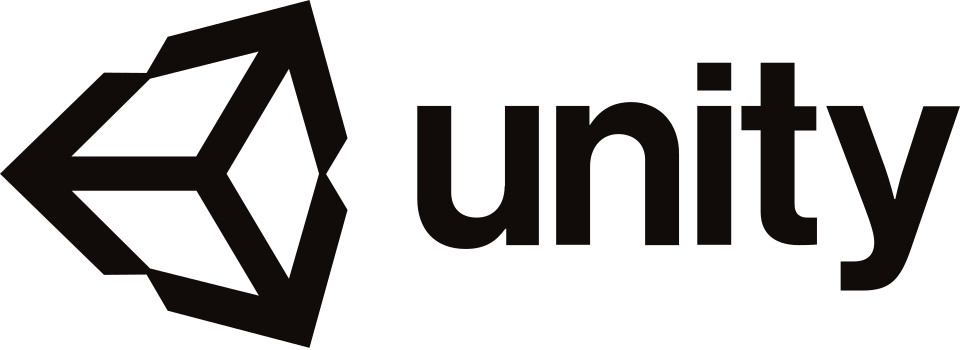

UnityEnvironment and interaction build
This project explored how immersive interaction can be used for machine-operation understanding, training flow, and simulation realism.
Core immersive tools and development stack used in this project.


Develop a VR workshop environment that makes machine interaction more intuitive and realistic for user training.
The project shows cross-domain strength: simulation, interaction design, spatial thinking, and engineering communication through immersive systems.
It broadens the portfolio beyond classical robotics while staying close to industrial training and human-machine interaction.
Use the links below to contact me, review where I fit best, explore my work, or request my CV through the website form.